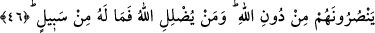

DÖNECEK BİR YOL VAR MI?
44. Allah kimi saptırırsa, bundan sonra artık onun hiçbir velîsi yoktur. Azâbı
gördüklerinde zâlimlerin: Dönecek bir yol var mı? dediklerini görürsün.
45. Ateşe arz olunurlarken onların, zilletten başlarını öne eğerek göz ucuyla gizli
gizli baktıklarını göreceksin. İnananlar da: İşte asıl ziyana uğrayanlar, kıyâmet
günü kendilerini ve âilelerini ziyana sokanlardır, diyecekler. Kesinlikle biliniz ki,
zalimler, sürekli bir azap içindedirler.
46. Onların Allah’tan başka kendilerine yardım edecek hiçbir dostları yoktur.
Allah kimi saptırırsa artık onun kurtuluşa çıkan bir yolu yoktur.
47. Allah’tan, geri çevrilmesi imkânsız bir gün gelmezden önce, Rabbinize uyun.
Çünkü o gün, hiçbiriniz sığınacak yer bulamazsınız, itiraz da edemezsiniz.
48. Eğer yüz çevirirlerse, bilesin ki biz seni onların üzerine bekçi göndermedik.
Sana düşen sadece duyurmaktır. Biz insana katımızdan bir rahmet tattırdığımız
zaman ona sevinir. Ama elleriyle yaptıkları yüzünden başlarına bir kötülük gelirse,
işte o zaman insan pek nankördür!
“Allah”, kişide nefs ü hevâ sapıklığı yaratarak yahut onu zulmü üzere terk ederek
“kimi saptırırsa, bundan sonra” yani Allah onu zelil ettikten sonra onun işini
üstelenecek bir yardımcısı, “hiçbir velîsi yoktur.” Ey görmek şânından olan insan,